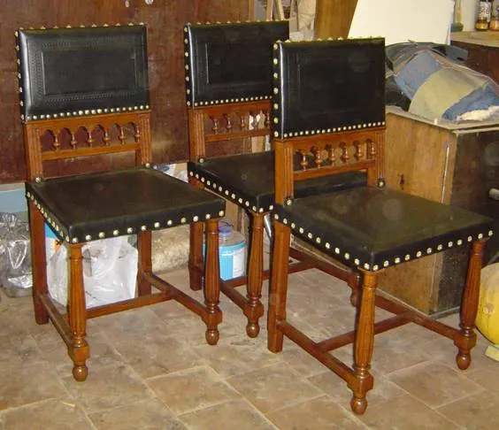
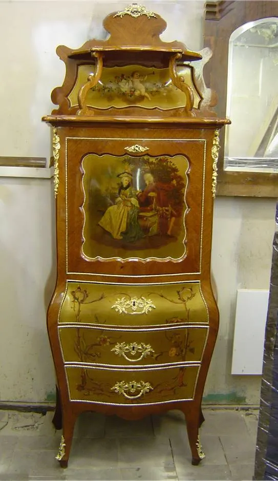
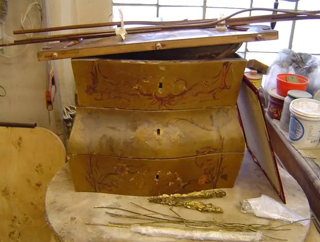
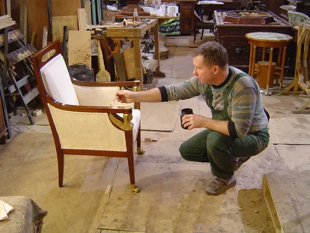
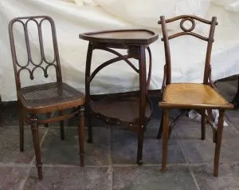
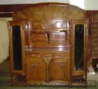
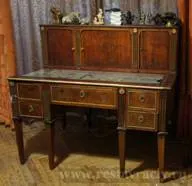
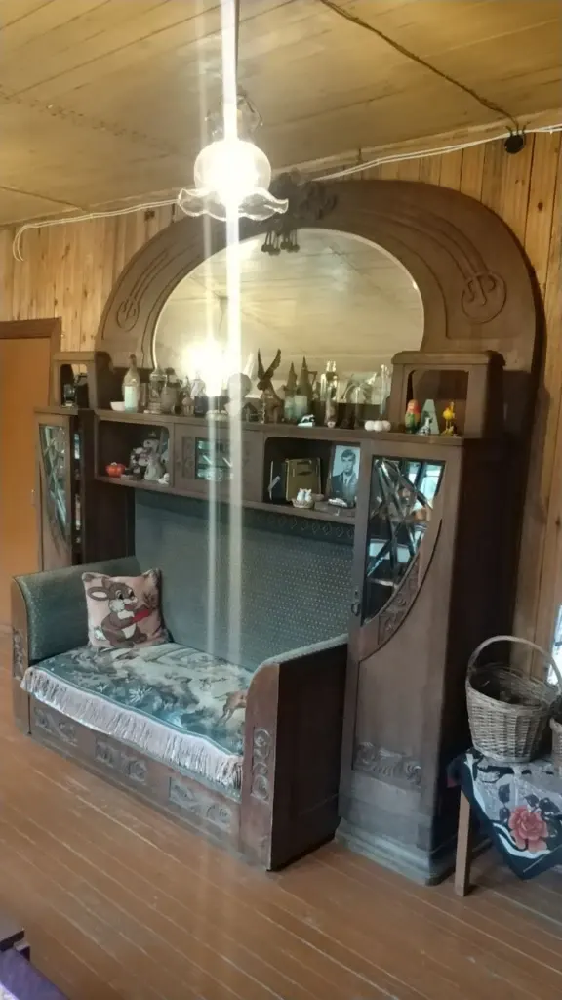

Цены
Цена реставрации
Цена зависит от объёма работы. Можно укрепить одно соединение, а можно перебрать всю конструкцию, восстановить резьбу и отделать поверхность вручную. В прайсе мастерской за 2026 год приведена начальная стоимость операций.

В таблице сохранены единицы и нижние границы из прайса мастерской. Услуги с разным составом нельзя складывать в готовую смету без осмотра предмета. Отдельно можно посмотреть пример буфета за 120 000 ₽ с перечнем работ.
Прайс мастерской за 2026 год
| Услуга | Стоимость |
|---|---|
| Реставрация стульев | |
| Склейка стула с обновлением лака | от 10 000 руб. |
| Ремонт поломанного стула с изготовлением деталей | от 15 000 руб. |
| Реставрация антикварного стула | от 30 000 руб. |
| Перетяжка пружинного сиденья с морской травой | от 20 000 руб. |
| Старинные пуфики, козетки, банкетки | от 25 000 руб. |
| Реставрация кресла | |
| Склейка деревянного кресла | от 20 000 руб. |
| Столярный ремонт и склейка | от 15 000 руб. |
| Реставрация антикварного кресла | от 50 000 руб. |
| Реставрация значительно разрушенного кресла | от 50 000 руб. |
| Курульные, кутаные, ампирные, сталинские | от 60 000 руб. |
| Реставрация стола | |
| Восстановление лака | от 30 000 руб. |
| Столярный ремонт | от 30 000 руб. |
| Замена сукна или кожи | от 15 000 руб. |
| Тиснение по коже, маркетри, инкрустации | от 30 000 руб |
| Реставрация шкафа, комода, буфета. | |
| Восстановление покрытия (освежить лак) | от 25 000 руб. |
| Убрать сколы, царапины, вмятины | от 10 000 руб. |
| Ремонт дверей, ящиков, фасадов | от 20 000 руб. |
| Замена стёкол и зеркал, изготовление полок | от 10 000 руб. |
| Реставрация секретеров, бюро, конторок | от 200 000 руб. |
| Реставрация дивана | |
| Замена ткани | от 30 000 руб. |
| Перетяжка пружин сиденья | от 40 000 руб. |
| Кабинетный с высокой спинкой и валиками | от 250 000 руб. |
| Красного дерева или карельской берёзы | от 250 000 руб. |
| Реставрация часов (корпус + механизм) | |
| Стенные | от 40 000 руб. |
| Кабинетные напольные | от 80 000 руб. |
| Каминные | от 40 000 руб. |
| Реставрация корпусов, футляров, шкатулок | от 20 000 руб. |
| Патефоны, граммофоны, проигрыватели. | |
| Диагностика и профилактика | от 10 000 руб. |
| Реставрация механизма | от 10 000 руб. |
| Реставрация корпуса | от 20 000 руб. |
| Реставрация рам, багета, опрвы. | |
| Реставрация скульптуры, статуэток, сувениров | от 10 000 руб. |
| Реставрация Ламп, люстр, торшеров | от 15 000 руб. |
В материале мастерской
Фотографии и детали
Открыть снимок у мастерской 


Открыть снимок у мастерской


Открыть снимок у мастерской


Открыть снимок у мастерской


Открыть снимок у мастерской


Открыть снимок у мастерской


Открыть снимок у мастерской


Открыть снимок у мастерской


Открыть снимок у мастерской
Посмотреть снимки с сайта мастерской 25
Оригинальные фотографии откроются здесь с сайта мастерской.
 Открыть снимок у мастерской
Открыть снимок у мастерской  Открыть снимок у мастерской
Открыть снимок у мастерской  Открыть снимок у мастерской
Открыть снимок у мастерской  Открыть снимок у мастерской
Открыть снимок у мастерской  Открыть снимок у мастерской
Открыть снимок у мастерской  Открыть снимок у мастерской
Открыть снимок у мастерской  Открыть снимок у мастерской
Открыть снимок у мастерской  Открыть снимок у мастерской
Открыть снимок у мастерской  Открыть снимок у мастерской
Открыть снимок у мастерской  Открыть снимок у мастерской
Открыть снимок у мастерской  Открыть снимок у мастерской
Открыть снимок у мастерской  Открыть снимок у мастерской
Открыть снимок у мастерской  Открыть снимок у мастерской
Открыть снимок у мастерской  Открыть снимок у мастерской
Открыть снимок у мастерской  Открыть снимок у мастерской
Открыть снимок у мастерской  Открыть снимок у мастерской
Открыть снимок у мастерской  Открыть снимок у мастерской
Открыть снимок у мастерской  Открыть снимок у мастерской
Открыть снимок у мастерской  Открыть снимок у мастерской
Открыть снимок у мастерской  Открыть снимок у мастерской
Открыть снимок у мастерской  Открыть снимок у мастерской
Открыть снимок у мастерской  Открыть снимок у мастерской
Открыть снимок у мастерской  Открыть снимок у мастерской
Открыть снимок у мастерской  Открыть снимок у мастерской
Открыть снимок у мастерской  Открыть снимок у мастерской
Открыть снимок у мастерской Есть похожая вещь?
Подберите ракурсы для предварительной оценки.